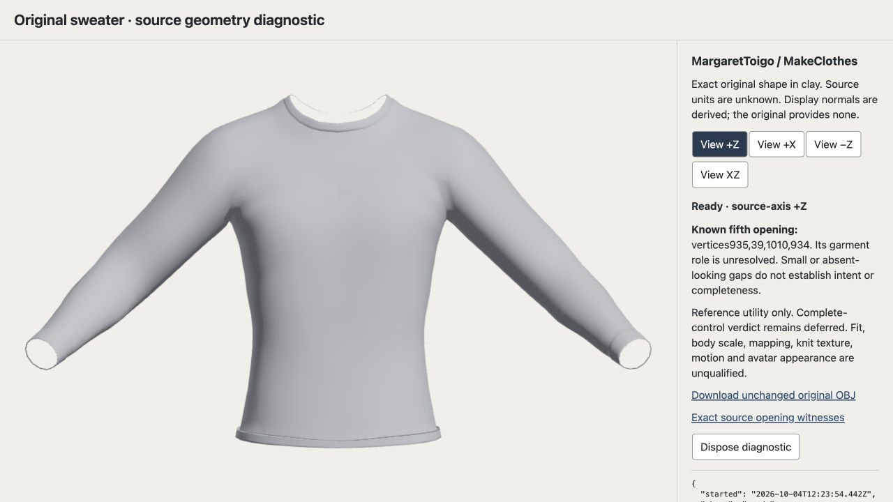
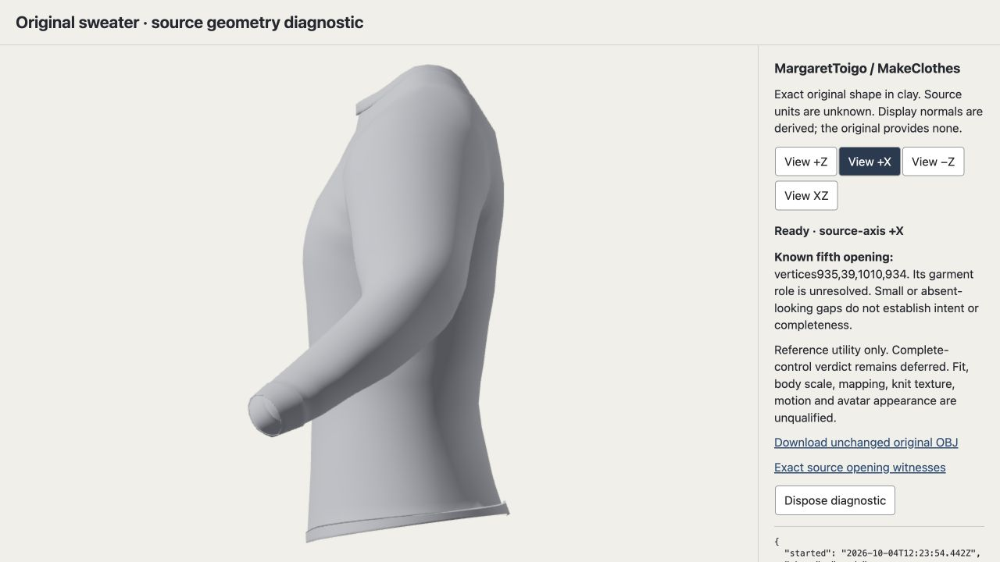
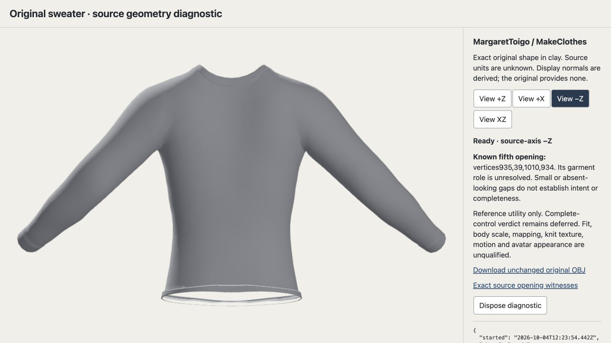
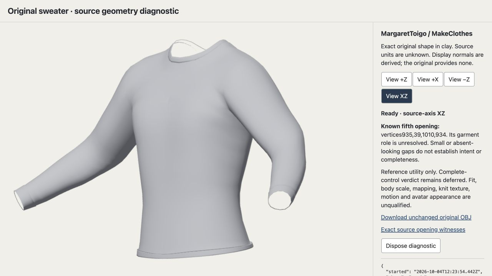

Fisherman sweater: four original source views
MargaretToigo’s original sweater is retained as a visual comparison for future artist work. These clay views reveal shoulder, sleeve and back volume. Its tapered waist and higher shoulders differ from our relaxed knitwear character target.

Source +Z
Front-facing view: neckline, full sleeves and cuffs, inward waist and open hem.

Source +X
Side view: torso and sleeve depth, curved contour and the hem profile.

Source −Z
Rear-facing view: shoulder-to-sleeve flow, smooth back and inward waist.

Source XZ
Oblique view: shoulder contour, sleeve volume and cuff opening.
Source, capture and review evidence
The primary MakeHuman catalog identifies MargaretToigo and CC0; the linked artist page provides this original. These are documented upstream statements. The saved OBJ is 172798 bytes, SHA-256 2844465f4e798666a90f631ea4a89ae30d3e526ef045a978d338908750d21d09.
All four images are unchanged 1280 × 720 native screenshots captured on October 4, 2026, 12:24–12:25 UTC. Click any image to inspect its original size. The temporary viewer was disposed and closed; this static gallery does not reopen it.
The literal boundary witness retains vertices 935, 39, 1010, 934 and the four sole-incident source edges. Its role remains unknown even if visually inconspicuous. The earlier complete-control refusal remains valid.
Independent visual decision · Root source/buffer/capture verification · Diagnostic receipt